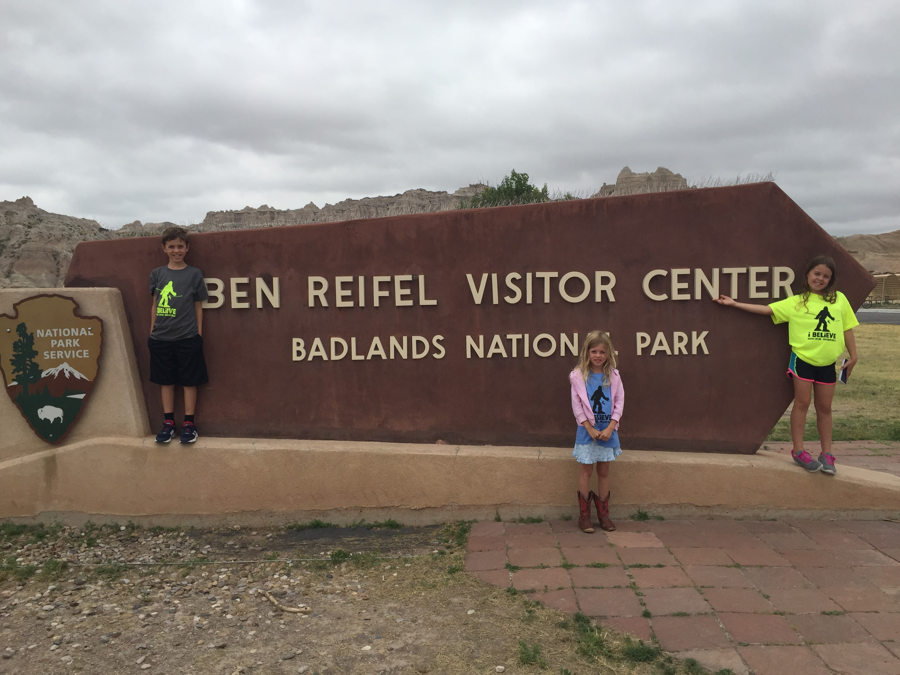
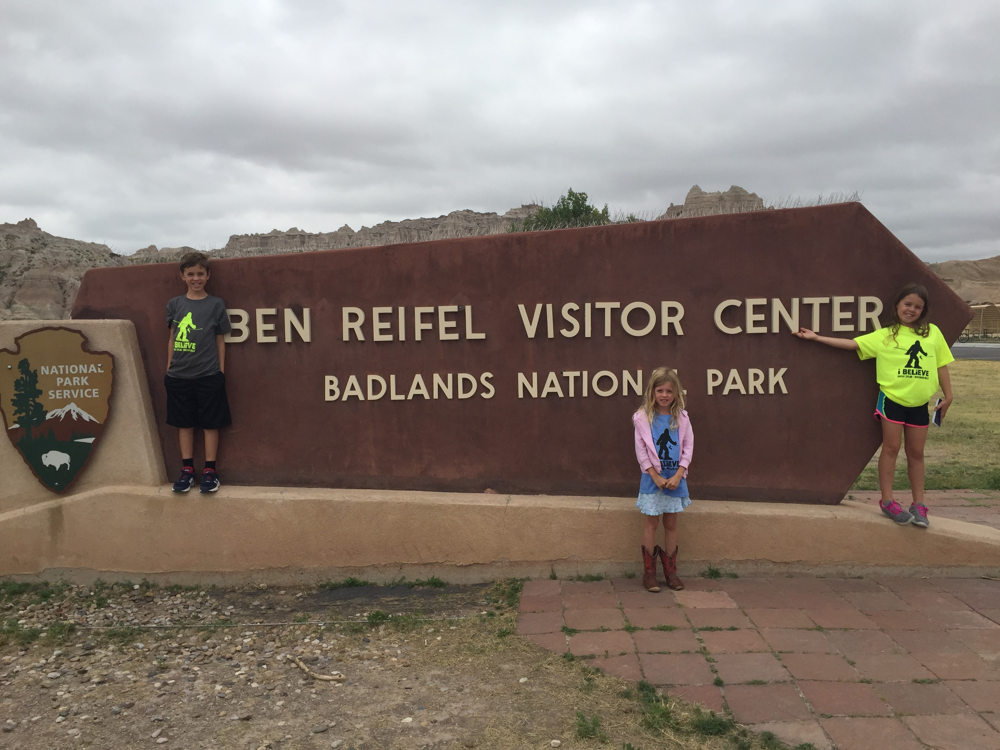
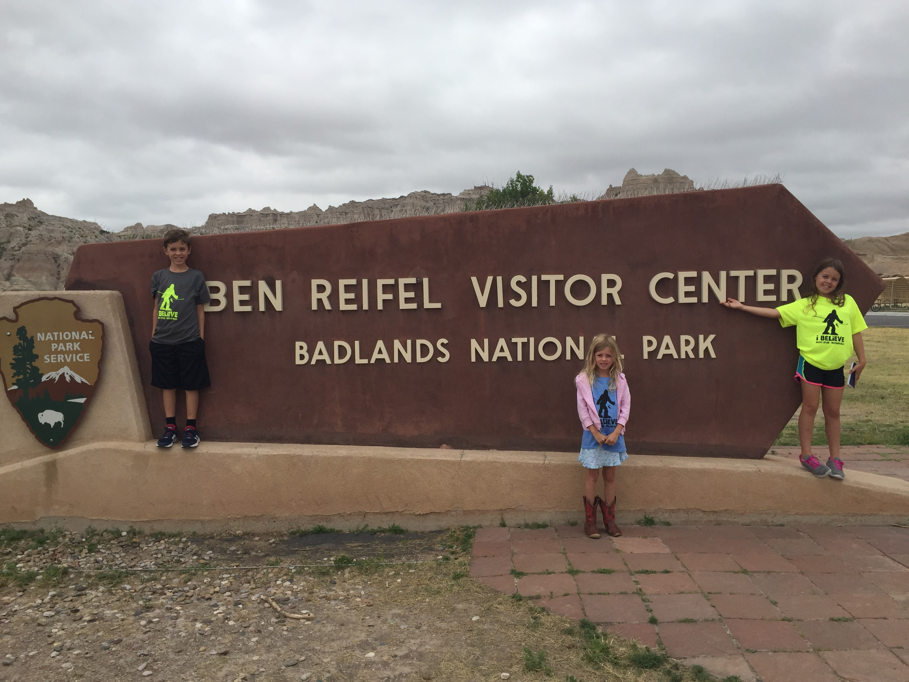
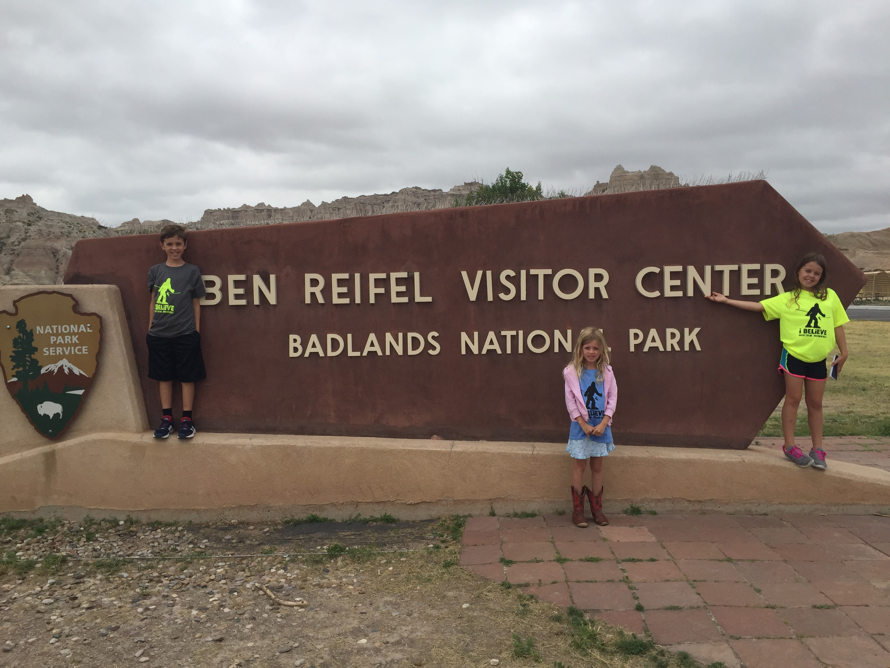

Family
In 2016 I loaded my kids into the minivan and took them on a drive across the Northern midwest states. We went to Wisconsin Dells, the Badlands, Mount Rushmore, Jewel Cave, and Custer State Park.
 



In 2016 I loaded my kids into the minivan and took them on a drive across the Northern midwest states. We went to Wisconsin Dells, the Badlands, Mount Rushmore, Jewel Cave, and Custer State Park.
 
